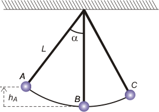
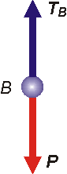

NO ME SALEN
PROBLEMAS RESUELTOS DE FÍSICA DEL CBC
(Leyes de conservación, energía mecánica, péndulo simple)
|
|

|
2.17- Una pesa de 0,3 kg está suspendida del
techo por un hilo de 1 m de longitud. Se la aparta
de la posición de equilibrio, hasta que el hilo
forme un ángulo de 37° con la vertical, y se la deja
libre. Despreciando los rozamientos y la masa
del hilo, determinar con qué velocidad pasará
por el punto más bajo de la trayectoria, y la fuerza
que soportará el hilo en ese instante.
Hallar a qué distancia mínima del techo llegará
al otro lado.
|
|  |
Acá tenés un esquemita, espero que te guste. Aproveché e hice algo importantísimo: le puse nombre a los eventos, o posiciones, o estados, o como vos quieras llamarlos, que están mencionados en el problema de los cuales hay que decir algo, como responder preguntas, o utilizar datos.
Si pensás que esto no es importantísimo, te recomiendo que leas este artículo. |
|
|
|
Trataremos en primer lugar de responder con qué velocidad pasa por B, la posición más baja. Elegí un SR de alturas tal que hB es igual a cero, ¿te parece? Comparemos energéticamente A con B.
WFncAB = ΔEMAB
Las únicas fuerzas que actúan durante este proceso son el peso, P, que es conservativa y la que realiza la cuerda, T, que estoy muy tentado de decirte que también es conservativa, pero no lo voy a hacer para no entrar en polémicas. Pero de todos modos su trabajo a lo largo de toda oscilación es nulo, ya que permanentemente forma un ángulo de 90 grados con el desplazamiento. Por todo lo dicho, el primer miembro de la ecuación vale cero.
0 = ΔEMAB
EMA = EMB
ECA + EPA = ECB + EPB
½ m vA² + m g hA = ½ m vB² + m g hB
la frase " y se la deja libre" quiere decir que vA es cero. Y la elección del SR permite hace de hB otro tanto. Entonces
m g hA = ½ m vB²
Esto se va simplificando demasiado. La masa se cancela (no deja de sorprenderme que el movimiento de los péndulos sea independiente de la masa)
g hA = ½ vB²
Hasta acá tenemos una ecuación, bastante sencilla, pero con dos incógnitas. Una de ellas, vB , no nos extraña, porque es la que estamos buscando; pero la otra, hA , podemos expresarla en función de algunos datos del problema que todavía no utilizamos: el ángulo de apartamiento de la vertical y la longitud del hilo. Mirá este grafiquito. |
 |
 |
El triangulito verde es rectángulo, no cabe duda. Y la hipotenusa es L, la longitud de la cuerda que es dato, y α también es dato... entonces mirá el cateto adyacente a α, llamémoslo CA.
CA = L . cos α
Si a CA le sumamos hA obtenemos... L
De modo que
hA = L — L . cos α
hA = L . (1 — cos α)
lo metemos en la ecuación que quedó pendiente y tenemos |
|
|
|
g L . (1 — cos α) = ½ vB²
Ahora sí, despejamos nuestra incógnita
vB = [2 g L . (1 — cos α)]½
Una vez más te repito: habrás notado que hasta ahora no reemplacé ni un sólo número. |
|
exponente ½
es lo mismo que
raíz cuadrada |
|
|
|
|
| Para responder la segunda pregunta, cuánto vale la fuerza que hace el hilo en esta posición, hay que recurrir a la dinámica. Hacemos el DCL... |
|
|
|  |
En esta instancia, 17 de cada 18 estudiantes meten la pata. Ven el DCL (que es correcto por cierto) y afirman sin la menor duda: TB = P . ¡Falso! Si eso fuera cierto el cuerpo estaría en equilibrio, no podría estar oscilando, debería estar quieto o animado de un MRU.
Pero está girando en una circunferencia de radio igual a L, la longitud del hilo y con una velocidad vB (que bastante nos costó hallar). Lo correcto es
TB — P = m vB² / L
O sea: sumatoria de fuerzas igual a masa por aceleración, en este caso centrípeta. De donde
TB = m g + m vB² / L
|
|
|
|
|
|
|
Para responder la última pregunta, hay que saber hasta dónde sube del otro lado, punto que llamé C. Lo comparo energéticamente con A.
EMA = EMC
ECA + EPA = ECB + EPC
½ m vA² + m g hA = ½ m vC² + m g hC
Si C es la máxima altura a la que llega, vC es cero. Luego
m g hA = m g hC
hA = hC
Me lo temía... ya que estamos frente a un problema absolutamente conservativo. Y también αA es igual a αC . Ojo, que nos piden la distancia al techo, que es L menos h (no pienso explicártelo, ni menos que menos calcularlo). |
|
|
| NOTA: en el esquema inicial te dibujé a C a una altura deliberadamente distinta de A... pese a que yo ya conocía el resultado. Bien, es una buena costumbre de los exáctidos que se precien, tomar esos recaudos que evitan que, por descuido, utilices propiedades del sistema que no son dato. |
|
 |
| DESAFIO: ¿Cuántas oscilaciones haría el péndulo antes de detenerse, suponiendo que lo consideramos detenido cuando oscila menos de 2 milímetros, y suponiendo que pierde energía por rozamiento de forma constante a razón de un centésimo de su energía inicial por oscilación? |
|
Algunos de los derechos reservados.
Se permite su reproducción citando la fuente.
Última actualización nov-06. Buenos Aires, Argentina. |
|
|